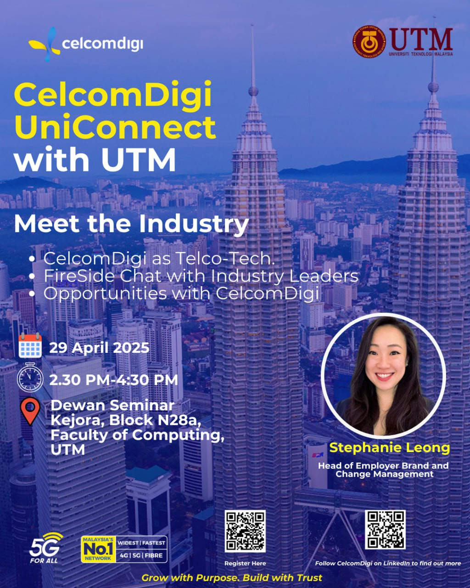

CelcomDigi UniConnect @ UTM
29 April 2025

...

Above are some photos of me during the event, capturing moments from the sessions and the overall experience.
Key Takeaways
-
Diverse Career Opportunities at CelcomDigi: CelcomDigi offers a wide range of career streams
for young talent, not just limited to technical roles.
- Career Streams: Students can explore paths such as AI and Machine Learning, Data & Advanced Analytics, Digital Marketing, UI/UX Design, AR/VR, Cloud Engineering, Cybersecurity and Sustainability. These reflect CelcomDigi's commitment to building a future-focused workforce.
- Young Talent Programme: A two-year structured program designed to empower Malaysian youth. It offers networking opportunities, department rotations and leadership development. The program aims to nurture 800 – 1000 young Malaysians over the next five years.
- Signature Internship Program: A dual-track program that includes three months of in-store experience and one month in corporate placement. Interns build real-world skills like communication, teamwork, stakeholder management and problem-solving. Skills earned are officially certified, which will help in boosting their professional credibility.
-
Human-AI Communication is All About Context: Interacting effectively with AI requires more than just instructions. Context and intentional communication are also play an important roles.
- Good vs. Poor Communication: Poor communication happens when shared understanding is missing. The more context AI has, the more accurate its response. This also applies in human relationships, which is when we know someone well, we can say less and still can be understood.
-
Understanding Through Words: AI learns a lot about us from how we describe things using our senses (sight, taste, touch). For example, using ChatGPT to ask prompts like:
- “If my favorite film is Gladiator, what other movies should I watch?”
- “Does a Snickers bar taste more like chocolate cake or ayam goreng?”
- “Does a rabbit feel more like cotton or a metal rod?”
-
Automation vs. Machine Learning vs. Generative AI:
- Automation: Follows fixed rules and is good for repetitive, predictable tasks (generating reports, web scraping, etc).
- Machine Learning: Learns patterns from data to make predictions or recommendations (image classification, recommendation engines, etc).
- Generative AI: Produces new content like text, music, or images by learning from vast language data (ChatGPT, content summarization, etc).
-
Benefits of Internal AI Development: CelcomDigi builds its own data and AI solutions in-house, which provides:
- Lower costs
- More flexibility and adaptability
- Better development of internal talent
- A culture that encourages experimentation and learning from failure
-
Innovation, Vision & Immersive Technology: Innovation takes time, persistence as well as a clear vision as reflected in the journey of Thomas Edison, light bulb inventor. CelcomDigi is embracing this mindset by investing in future-facing technology, education, and ecosystems.
- Innovation Requires Persistence: Inspired by the story of Thomas Edison’s 1063 failed attempts to invent the light bulb, the session emphasized that failure is part of the innovation process. It's about learning what doesn't work until you discover what does.
-
CelcomDigi Innovation Centre: The centre serves as a national innovation catalyst with the mission to:
- Partner with local and global tech companies to scale innovation
- Collaborate with universities to nurture young talent
- Engage with ministries and public agencies for broader societal impact
-
Metaversity and the Future of Learning: Through CelcomDigi Metaversity, the company is reimagining education by integrating:
- 5G connectivity for real-time interaction
- Artificial Intelligence (AI) for personalized learning
- Extended Reality (XR) to deliver immersive classroom experiences
-
Work Readiness Starts with Self-Awareness: Entering the workforce with confidence requires knowing who you are, what you value and how to present yourself professionally.
- Know Yourself First: Understand your strengths, interests and motivations. Choose the roles and companies that align with your personal goals and values.
- Build a Strong Resume: Keep it simple and achievement-focused. Highlight your university projects, part-time jobs as well as leadership experiences to show relevant skills and initiative.
-
Develop Professional Skills:
- Communicate clearly (writing and speaking)
- Manage your time efficiently
- Solve problems effectively
- Work well in teams
- Grow Your Online Presence: Create or polish your LinkedIn profile to build your professional brand. Highlight your skills, education and project work.
- Practice Interview Skills: Prepare answers for common questions and share real stories that reflect your strengths and experiences.
- Keep Learning: Show a growth mindset and stay updated on industry trends, tools and certifications.
- Maintain a Professional Image: Always dress appropriately and communicate professionally for both online and offline.
-
What CelcomDigi Looks for in Talent: Candidates who are:
- Purpose-driven and passionate about making an impact
- Ambitious, agile, and ready to grow in high-performance environments
- Innovative and future-focused
- Trustworthy and collaborative
- Customer-centric in problem-solving
- Diverse and inclusive in thought
- Resilient and adaptable to change
-
Tips: You can use the formula Action + Impact + Learning when describing your experiences.
For Instance: “I did [action], which resulted in [impact]. Through this, I learned [lesson].” -
Understanding Industry Challenges: The tech landscape is constantly evolving, and it's important to stay aware of broader issues that impact professionals and organizations alike.
- Access and Inclusivity: Bridging the digital divide and ensuring equal access to technology remains a global challenge.
- Security and Privacy: As technology becomes more integrated into daily life, protecting user data and securing systems are increasingly critical.
- Keeping Up with Change: With emerging technologies like AI, XR, and cloud platforms evolving rapidly, lifelong learning has become essential for any tech professional.
- Career Preparation & Personal Development: There is a growing need for adaptable, interdisciplinary talent who can navigate both technical and human-centered aspects of tech.